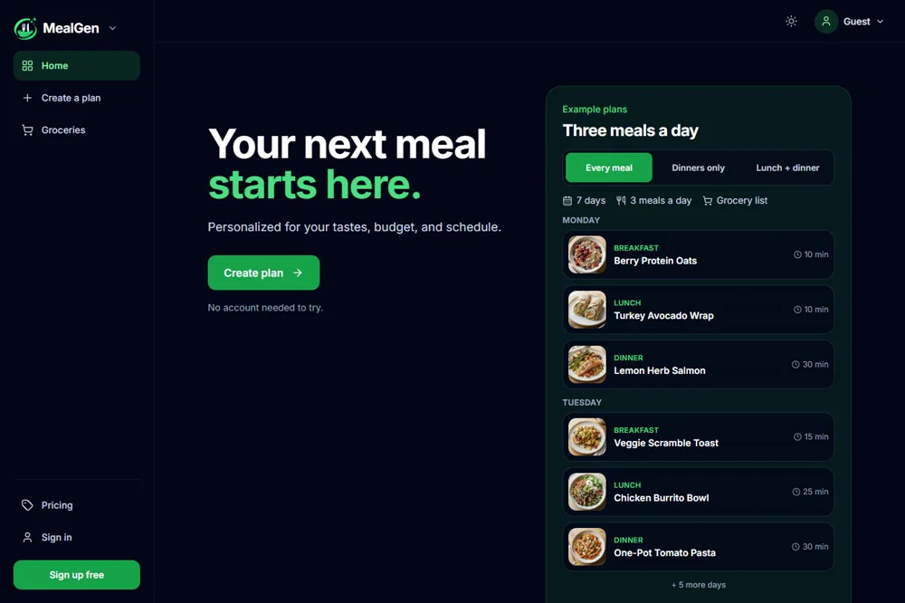
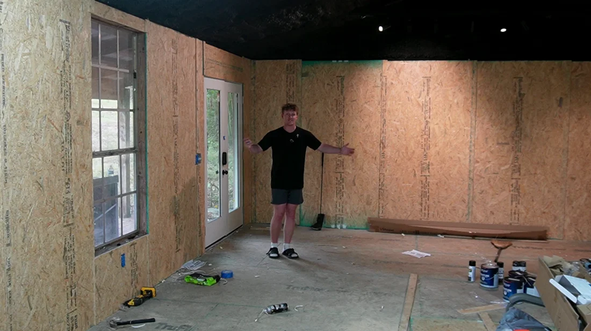
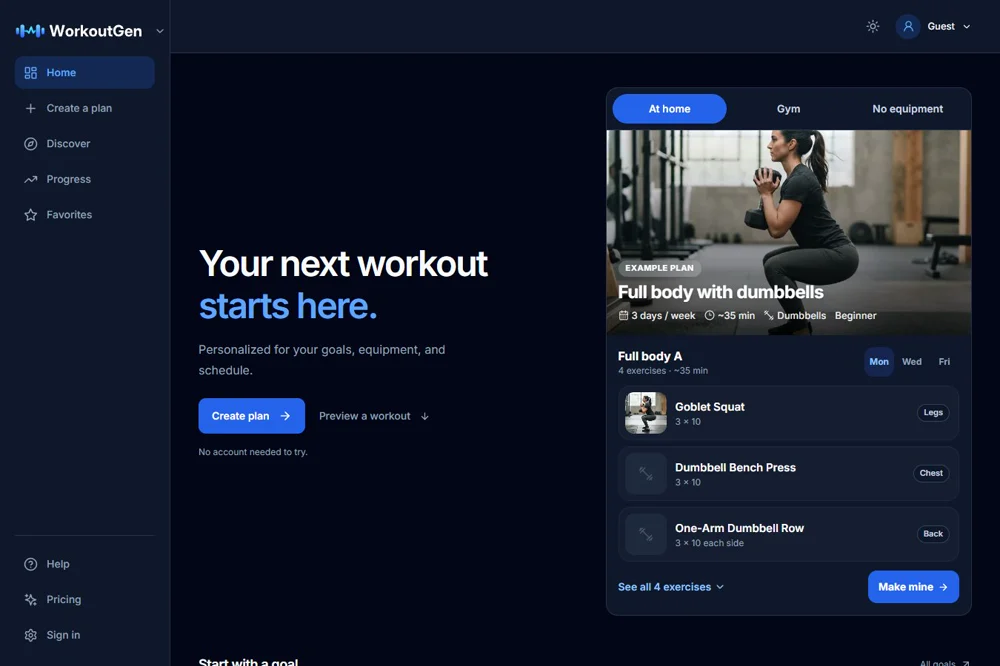
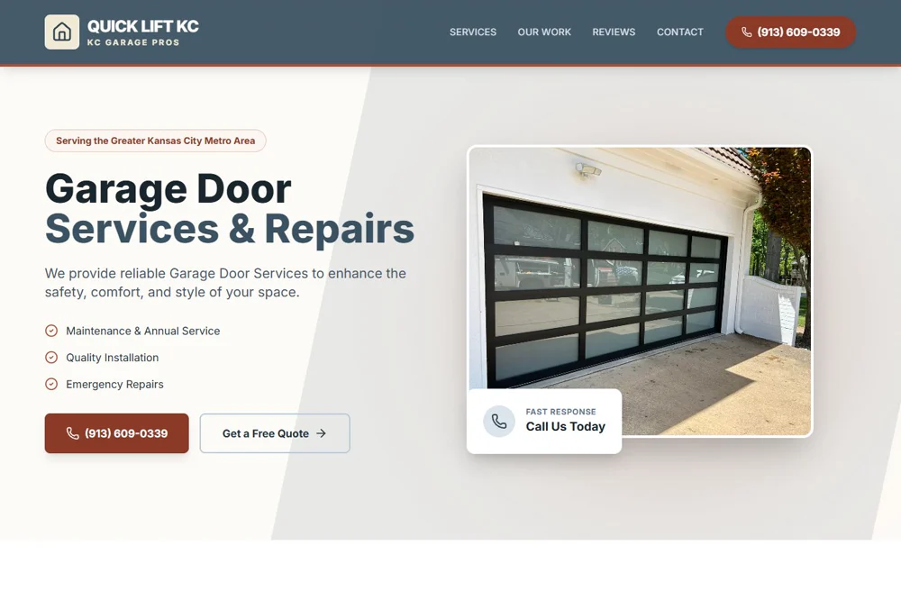

MealGen
I built a meal planner that turns tastes, budget, and schedule into a weekly menu and grocery list.
Visit MealGenPersonal portfolio
I’m Jake. I build websites, edit YouTube videos, and use AI to take repetitive work off my plate.
Explore my work
I built a meal planner that turns tastes, budget, and schedule into a weekly menu and grocery list.
Visit MealGen
00:24I edited this golf simulator build video for a Fiverr client. The opening cuts from the finished room to the work that went into it.
Watch excerpt
I built a workout planner that adapts a routine to your goals, schedule, and the equipment you have on hand.
Visit WorkoutGen
I helped a friend build a website for a Kansas City garage door business. Customers can browse recent installations and request service.
Visit Quick Lift KCAt work, I use AI to automate parts of vulnerability management. I also automate recurring data pulls so I can spend more time using the results.
My projects often start with a practical question. What should I cook this week? What workout can I do with the equipment I have? MealGen and WorkoutGen are my answers.
Editing gives me a different problem to solve. With the golf simulator video, the first decision was where to start the story.
Find me on GitHub